Form in continuous motion.
Five organic and five crystalline studies of particles in continuous transformation.
Compare the studies at the same moment. Changing a variation preserves the timeline.

Original artwork · a still for this variation is unavailable.
- ≈00–08 sGradual formation
- 00–15 sContinuous transformation
- 15–20 sWind dispersal
- 20–22 sEmpty frame
An abstract study of changing geometry. The changing structures and particle motion are art-directed.
The Viscera still is shown. JavaScript is required to compare resonance studies and play their motion.